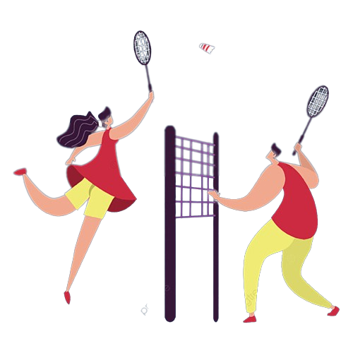

Bulu Tangkis
Bulu tangkis, badminton, atau tepuk bulu adalah suatu olahraga yang menggunakan alat yang berbentuk bulat dengan memiliki rongga-rongga di bagian pemukulnya. Dan memiliki gagang. Alat ini dikenal dengan nama raket yang dimainkan oleh dua orang (untuk tunggal) atau dua pasangan (untuk ganda) yang saling berlawanan. Bulu tangkis bertujuan memukul bola permainan bulu tangkis, yaitu kok melewati jaring agar jatuh di bidang permainan lawan yang sudah ditentukan dan berusaha mencegah lawan melakukan hal yang sama.
